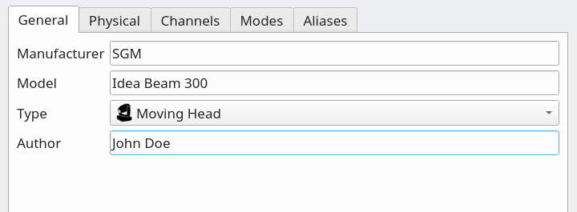

Fixture Definition Editor is a separate application bundled together with QLC+ for creating and modifying fixture definitions used by QLC+. The definitions tell QLC+ (and users) important details about fixtures, such as which channel is used for pan movement, what value in which channel changes the beam color to green, how the fixture is reset etc...
The main window in the Fixture Editor is just an empty workspace that contains the actual editor windows used to edit fixture definitions.
Important note: for many reasons, you SHOULD NOT save or copy your custom fixtures in the
QLC+ system fixtures folder. The most important is that when you uninstall QLC+, the system
fixtures folder gets deleted, so your fixtures.
You are recommended to save them in the user fixtures folder. To find it, please refer to the
Q & A section of this documentation.
 |
Create a new fixture definition. Opens an empty Fixture Editor window. |
 |
Open an existing fixture definiton. Opens the fixture definition in a Fixture Editor window. |
 |
Save the fixture definition in the currently active Fixture Editor window. |
 |
Save the fixture definition with a given name in the currently active Fixture Editor window. |
Fixture Editor windows contain everything needed to edit one Fixture Definition
at a time. The windows are separated in five tabs: General,
Physical, Channels,
Modes and Aliases.
Tabs are organized in a logical order that should be followed from left to right
when creating a new fixture definition.
This is the section where the Fixture general information is provided.
|  |
|
This is the section where the global physical information of the fixture is provided.
An identical section is also present in each mode, in case the fixture allows its physical
properties (e.g. pan/tilt range) to be altered depending on the mode. In that case,
the global physical information can be overridden by per-mode physical information.
|
The channels tab contains all possible channels that the fixture understands in all of its modes. The channel order doesn't matter in this tab at all. Instead, channels are arranged in certain order in each mode in the Mode tab. On the Channel tab, only the channel names, their capabilities (i.e. value ranges and their purpose) matters.
|
The Channel Editor is used to edit individual channels and the DMX value ranges of each capability (a green color, a certain gobo, prism rotation, etc.) that a fixture channel provides. Refer to your fixture's manual to get a detailed list of the fixture's channels and DMX values.
Here's a few screenshots showing the possible scenarios that can be encountered while editing a Fixture channel.
 |
|
| Fig. 1 | Fig. 2 |
 |
 |
| Fig. 3 | Fig. 4 |
Following, the description of the settings that appear in the Channel Editor. Reference to the above figures will be done to point you to a visual context.
| Name | The channel name. When selecting a channel preset (single capability channel), a channel name will be automatically suggested, with the possibility to customize it. |
| Preset | A preset is a sort of shortcut to speed up the definition creation. It also provides to the QLC+
engine, useful information to recognize and properly treat a DMX channel. It frequently happens that a Fixture has some RGB or CMY channels. A LED bar might have dozens of them. Therefore, selecting a color preset will fill in for you all the necessary information that QLC+ needs, with a single mouse click. (See Fig. 1) It is also frequent to find a channel to control Pan/Tilt speed. Some presets are available for that purpose, indicating also if the speed is from slow to fast or from fast to slow. Just pick the preset that is more suitable for the definition you're creating. When a preset is selected, all the rest of the editor become inactive. If a channel has multiple DMX ranges (capabilities), just leave "Preset" to "Custom" and proceed further with this reading. |
| Type |
This indicated the channel's type (its role in the fixture). Selecting a type, implicitely defines also
the channel precedence (LTP or HTP).
It is therefore very important to pick the correct type here, to avoid undesired behaviours within QLC+. Note that the Grand Master controls only Intensity and primary color channels by default. Note also that the Color Tool in Scene Editor is available only if a fixture provides Primary color channels for RGBAWUV/CMY. |
| Default value | Specify the DMX value (0 to 255) to which a channel is set on power up. For example, some moving heads position their Pan/Tilt motors half way, which means the initial DMX channel value is equal to 127. |
| Role |
Applicable to channel pairs that make 16 bit values, usually Pan or Tilt group, but some newer fixtures
support 16 bit dimmer or even RGB, gobo or focus channels. For 8 bit values (e.g. when the fixture supports only 8bit movement, only one channel for each movement), assign the Coarse (MSB) control byte to the channel. If, however, the fixture supports 16bit (two channels for each feature), you should assign the Coarse (MSB) byte to the channels that provide coarse value and the Fine (LSB) byte to the channels that provide fine value adjustment. If you are not sure, use Coarse MSB. |
| Capabilities |
Displays the list of DMX value ranges for the currently edited channel. If a
channel provides only one capability (for example pan or dimmer) you should use a channel preset (see above).
For more elaborate capabilities, such as colors or gobos, you should create
capability ranges for each of the colors (for example 0-15 white, 16-32 blue...). Specific ranges for each channel can be found in the product manual under the name "DMX chart". Entering DMX ranges is pretty straight forward. The entry area is organized as a spreadsheet where range values and descriptions can be entered continuously just by pressing the TAB key. |
| Preset |
Each capability can be enriched with a so called "preset", which tells the QLC+ engine
more useful information about a range of DMX values. For example if the capability is "Shutter open", a preset called "ShutterOpen" is available so that QLC+ knows exactly how to treat the range. Depending on the preset type, one or more additional information could be entered:
|
 |
Remove the selected capabilities from the channel. |
 |
Create new capabilities quickly with the capability wizard. |
Capability Wizard is a handy tool for creating multiple capability value ranges of the same size. Usually this applies to fixed colors, gobo indices and various macro channels.
|
The modes tab contains all modes the fixture can be configured to.

|
|
In this tab it is possible to define the rules of replacement triggered by capabilities set as "Alias" preset.
Let's make an example. A fixture has channel 5 named "Effects" which controls the behavior of channel 6.
Channel 5 has 2 capabilities: "Speed on channel 6" and "Sound sensitivity on channel 6".
The latter have been set to the "Alias" preset. By default, when DMX value of channel 5 is 0,
channel 6 acts as speed control. When DMX value of channel 5 enters the "sound sensitivity" capability,
channel 6 becomes a sound sensitivity adjustment.
To cope with this case, you need to define 2 channels: "Speed" and "Sound sensitivity". In the fixture mode
add only "Speed", since it will the default behavior when DMX value of channel 5 is equal to 0.
Then you need to define just one alias: the one that will replace the default channel "Speed"
with "Sound sensitivity". QLC+ will then know what to do when the DMX value
of channel 5 enters or exits the alias.

|
|